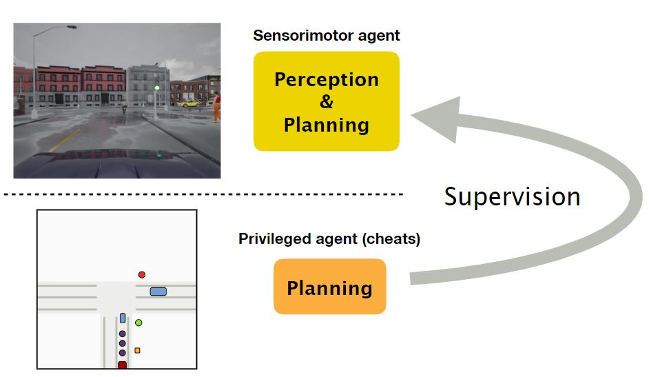
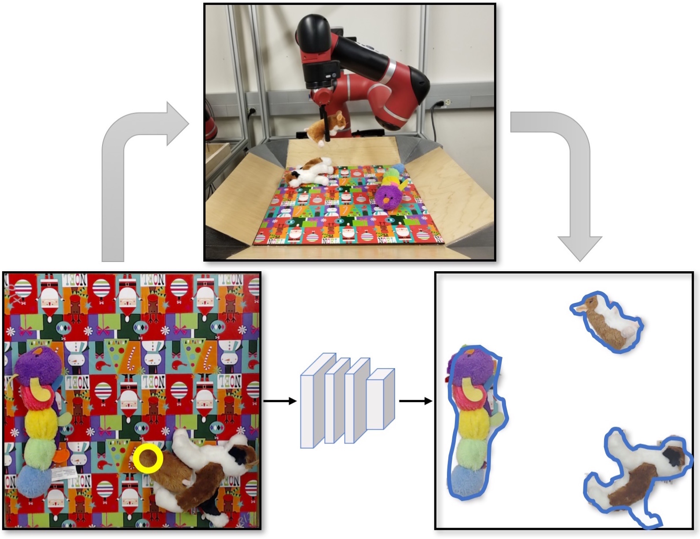
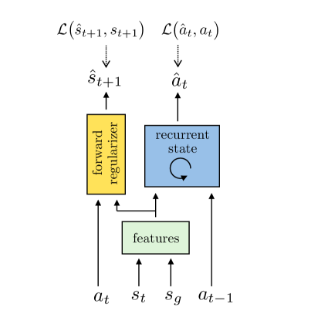
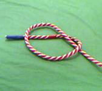

|
Research
My research interests lie in robotics, computer vision and machine learning including reinforcement learning.
|
|

|
Learning by Cheating
Dian Chen,
Brady Zhou,
Vladlen Koltun,
Philipp Krähenbühl
Conference on Robot Learning (CoRL), 2019
website /
code /
video /
arxiv
We present a two-stage imitation learning method for vision-based driving. Our approach achieves 100% success rate on all tasks in the original CARLA benchmark, sets a new record on the NoCrash benchmark, and reduces the frequency of infractions by an order of magnitude compared to the prior state of the art.
|
|

|
Learning Instance Segmentation by Interaction
Deepak Pathak*,
Fred Shentu*,
Dian Chen*,
Pulkit Agrawal*,
Trevor Darrell,
Sergey Levine,
Jitendra Malik (*equal contribution)
Robotics Vision Workshop, Conference on Computer Vision and Pattern Recognition (CVPR), 2018
website /
arxiv
We present a robotic system that learns to segment its visual observations into individual objects by experimenting with its environment in a completely self-supervised manner. Our system is at par with the state-of-art instance segmentation algorithm trained with strong supervision.
|
|

|
Zero-Shot Visual Imitation
Deepak Pathak*,
Parsa Mahmoudieh*,
Michael Luo*,
Pulkit Agrawal*,
Dian Chen,
Fred Shentu,
Evan Shelhamer,
Jitendra Malik,
Alexei Efros,
Trevor Darrell (*equal contribution)
(Oral Presentation) International Conference on Learning Representation (ICLR), 2018
website /
arxiv
We present a novel skill policy architecture and dynamics consistency loss which extend visual imitation to more complex environments while improving robustness. Experiments results are shown in a robot knot tying task and a first-person visual navigation task.
|
|

|
Combining Self-Supervised Learning and Imitation for Vision-Based Rope Manipulationg
Ashvin Nair*,
Dian Chen*,
Pulkit Agrawal*,
Phillip Isola,
Jitendra Malik,
Pieter Abbeel,
Sergey Levine (*equal contribution)
IEEE International Conference on Robotics and Automation (ICRA), 2017
website /
arxiv
We present a system where a robot takes as input a sequence of images of a human manipulating a rope from an initial to goal configuration, and outputs a sequence of actions that can reproduce the human demonstration, using only monocular images as input.
|
|
Misc
|
|
My father is an architect and a visual artist. Checkout his portfolio.
|
|